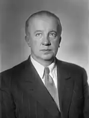
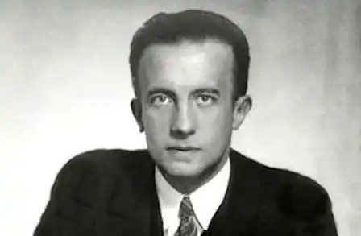

ЕЛЮАР, Поль (Eluard, Paul; автонім: Ґрендель, Ежен Еміль Поль, — 14.12.1895, Сен-Дені, деп. Сена — 18.11. 1952, Париж) — французький поет.Брав участь у Першій світовій війні. Фронтові враження надихнули Елюара на створення першої збірки віршів "Обов'язок і тривога" ("Le Devoir et l'inquietude", 1917). У 1919 p. Елюара заприязнився з дадаїстами (зб. "Тварини та їхні люди, люди та їхні тварини" — "Les Animaux et leurs homines, les hommes et leurs animaux", 1920; "Приклади" — "Exemples", 1921). У 1922 p. розчарувався у дадаїзмі, а в 1924 p. разом з А. Бретоном і Л. Арагоном очолив групу сюрреалістів. У 1930-х pp. перебував на антифашистських позиціях. В окупованому німцями Парижі Елюара написав поетичні збірки "Відкрита книга І" ("Le Livre ouvert I", 1940), "Відкрита книга ІІ" ("Le Livre ouvert II", 1942).
У 1942 p. письменник вступив у Французьку комуністичну партію. Поетичним знаменом руху Опору став вірш Елюара "Свобода" зі збірки "Поезія і правда" ("Voesie etverite", 1942). Назва збірки має програмний характер: це гасло свідчить про відмову Елюара від поетичних експериментів, про пристрасне і чесне втілення "правди, нічим не прикритої і дуже бідної, і полум'яної, і завжди прекрасної", як про це каже сам поет у післямові до книги віршів "Віч-на-віч з німцями" ("Au rendez-vous allemand", 1945).
Вірш "Свобода", написаний на початку 1942 p., був надрукований у збірці "Поезія і правда" під назвою "Єдина думка". Твір Елюара майже блискавично облетів усю Францію, його переписували у багатьох примірниках і підпільно розповсюджували, читали під час конспіративних зібрань. М. Балашов, дослідник поезії Елюара, так визначає ідейно-художні особливості цього вірша: "Поет наважився двадцять разів повторити у тексті одну-єдину синтаксичну конструкцію, яка неодмінно закінчується словами: "Я ймення твоє пишу". Це багаторазове повторення і широкий, що на перший погляд може видатися випадковим, діапазон уявлень, почуттів і речей, на яких поет накреслив слово "свобода", художньо виправдані і необхідні. Адже йшлося про свободу, а під час окупації це була та найважливіша спільна заповітна "єдина думка", до якої патріотів з різних соціальних верств, різного віку та характерів вели найрізноманітніші асоціації ідей; думка, для якої жодне повторення не було зайвим". Елюар — визначний майстер інтимної лірики. Перші повоєнні поетичні збірки "Зайвий час" ("Le Temps deborde", 1947), "Пам'ятне тіло" ("Corps memorable", 1948) забарвлені трагічними мотивами самотності та страждання, навіяними смертю дружини поета. Вийти за межі сфери суто інтимних переживань Елюара зумів у збірках "Політичні вірші" ("Poemes politiques", 1948), "Урок моралі" ("Une lecon de morale", 1950). Широко відомою стала видана разом з П. Пікассо книга віршів "Обличчя миру" ("Le Visage de la paix", 1951). У своїй післявоєнній творчості Елюар виступав як поет-громадянин, патріот, борець за мир і прогрес. В. Луков, В. Триков